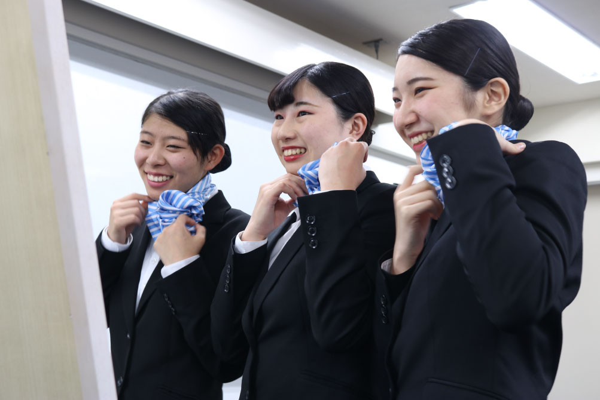
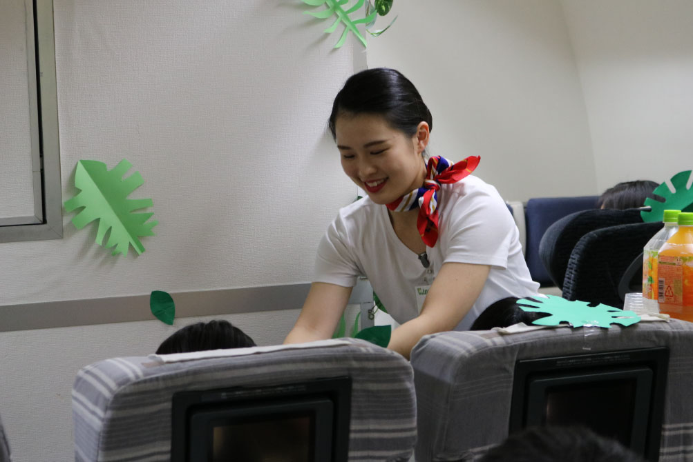
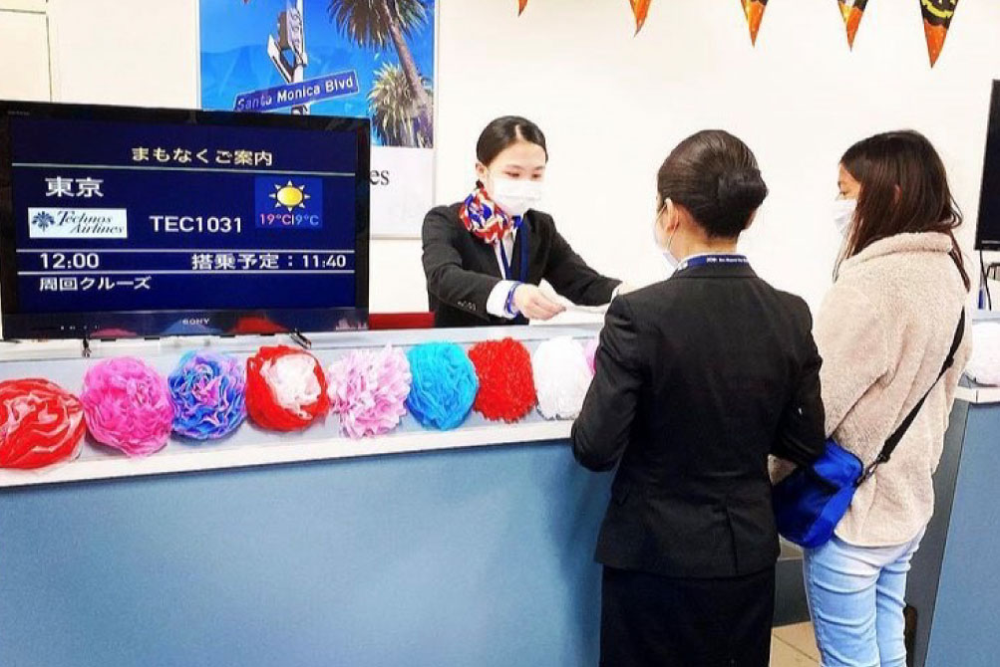

エアラインサービス科
- フライトアテンダントコース／グランドスタッフコース
- グランドハンドリングコース／エアラインビジネス・大学コース
-
CA、GS、GHなど航空業界の
サービススタッフを目指し
航空業界にとどまらないキャリアを
築く力を身につける - CA（キャビンアテンダント）、GS（グランドスタッフ）、GH（グランドハンドリング）など憧れの職業に就くだけではなく、新たな航空ビジネスの創出につながるマーケティング力や思考力などを身につけ、変化する航空業界でキャリアを築いていける力を養います。
学びPICK UP!
【グランドハンドリング】トーイングカーを使った実習授業！
皆さん、こんにちは 桜が満開に咲いて、新しい年度もすぐそこまで来ていますね。 進路活動はいかがですか？？ さてさて、今日は【グランドハンドリングコース】について紹介します。 グランドハンドリングコースでは ...
続きを読む- 【目指せる職種】
- フライトアテンダント／エアポートコンシェルジュ／グランドスタッフ／予約・発券オペレーター／グランドハンドリングスタッフ／空港セキュリティースタッフ／フォワーダー 他
- 【目指せる資格】
- 実用英語技能検定／TOEIC®／観光英語検定／アマデウス・システム検定／手話技能検定／秘書検定／韓国語検定／日商PC検定（ワープロ検定）／マナー・プロトコール検定／サービス介助士／みんなの外国語検定／IATA DIPLOMA（ディプロマ）試験（国際航空貨物取扱士）／各種運転免許／ビジネス能力検定／航空検定 他
- 【主な就職先】
- 日本航空（株）／日本トランスオーシャン航空（株）／全日本空輸（株）／スカイマーク（株）／（株）ソラシドエア／エミレーツ航空／（株）JALスカイ／ANAエアポートサービス（株）／ANA成田エアポートサービス（株）／羽田旅客サービス（株）／空港ターミナルサービス（株）／（株）JALグランドサービス 他
フライトアテンダントコース
乗客を目的地まで安全にお運びし、行き届いたサービスで快適な空の旅を実現する、国内線をはじめ、国際線でも活躍できるフライトアテンダントをめざします。
グランドスタッフコース
飛行機を定刻通りに安全に飛ばすという使命のもと、さまざまなお客さまのご要望に対応しながら、ご搭乗までのひと時を安心してお過ごしいただけるグランドスタッフをめざします。
グランドハンドリングコース
グランドハンドリングは、空の旅を支える縁の下の力持ち。仲間と一致団結しながら定刻通りのフライトを支えるために、冷静な判断力を養い、質の高いサービスを提供できるプロフェッショナルをめざします。
エアラインビジネス・大学コース
「海外留学で英語力を高めたい！」「チーフパーサーを目指したい！」そんな皆さんの憧れを叶えるために、テクノスの「知識・技術の専門性」と大学の「幅広い学問と教養」を学修します。
もっと大学コースを知りたい方はコチラ学びの特徴
未来を見据えた
学科オリジナルの学び
航空機内を完全再現した
モックアップ実習室で行う
フライトアテンダント
実務実習
航空機内を再現したモックアップ実習室で、機内サービス実習や救命胴衣着衣実習などを実施。フライトアテンダントとして求められる安全面に関する知識や立ち居振る舞いを、実践的に身につけていきます。
本物の航空会社が抱える
課題への理解を深め
解決策を提案する
日本航空がSKYTRAX社の「ワールド・エアライン・スター・レーティング」において、最高評価である5スターを取り続けるために、1職種の取り組み、サービスにとらわれず、幅広い観点で日本航空を含むグループ各社へ具体案を提案します。
身につけたスキルを
実践する学科ゼミ
基礎ゼミ
航空機利用に
新たな価値を
新幹線、深夜バスなど他の交通機関と比べて「飛行機を使いたい」と思ってもらえるサービスや利用目的を考え、具体案を計画、発表していきます。
応用ゼミ
空港の将来を考え、
収益を大きくしよう
大きく役割が変化する空港の過去・現在・未来を調べます。その上でこれからの「空港」の収益を増やす提案を考え、具体案を計画、発表していきます。
発展ゼミ
SDGs
～北九州とコラボ～
SDGs未来都市でもある北九州の観光協会とともに、SDGsツアーを企画し、参加者にSDGsに興味を持ってもらえるような旅行商品を考えます。
身につける力&磨く力

安全な空の旅を守る
行動力と判断力
お客様の空の旅の安全を、確実に守るのが一番大事。さまざまな実習を通して安全に対する知識、行動力とどのような事態にも素早く対応できる判断力を養っていきます。

美しく、丁寧な
接客スキル
どんな時も親しみやすくやわらかな笑顔を絶やさず、誰からも好感を持たれる第一印象であることや相手の立場で思いやる接客ができる力が必要です。

チームで協働し、
気を配る力
航空機には多くのお客さまがお乗りになり、求められるサービスも異なります。自分以外のクルー、スタッフと協働しながらすべてのお客さまに気を配る心と行動力を身につけます。
在学生レポート
在学生のキャンパスライフを覗いてみよう
学び最新TOPICS
一覧へ描けるキャリア
自分の「卒後ビジョン」を描くことで、
奨学金にチャレンジできる入学方法＆試験
-
Technos
オーディション入学「卒後ビジョン」を用いたプレゼンテーション型の入学方法。評価に応じて「1年次の学費全額免除」等の支援が受けられます。
Technosオーディション
入学の詳細はコチラ -
特待生試験
「卒後ビジョン」を描くことで、どの入学方法を選択した方でも挑戦可能。評価に応じて、学費負担が軽減されます。
特待生試験の
詳細はコチラ
学生や教員と一緒に描く！ オープンキャンパスの
詳細はコチラ
卒業生レポート
社会で活躍する卒業生のキャリアを知ろう
学びを体験できる
オープンキャンパス
業界・学科
体験メニュー
-
これが好印象のコツ！エアライン業界の身だしなみ伝授！！
 実際の制服を着用しながら、身だしなみが綺麗な理由を徹底解剖！！CAの裏話も！
-
Airline 業界におけるサービスのプロを目指そう！
 機内模型やカウンターを使ってお客様心理に触れながら、接客のテクニックを学び、実践します。
-
空の安全はどうやって守られている？
 飛行機に持ち込めないものってなんだろう？CA、グランドスタッフ、グランドハンドリングの保安要員としての役割も学んでみよう！
よくある質問
学科Q&A
高校生からの質問
- 英語に自信がないのですが、授業はどんな感じですか?
-
自分のレベルに合ったクラスで学びます。外国人の先生も多くいるので、会話も上達します。また、分からない部分は休み時間などの時間を使って、質問することも出来ます。
- 先輩方の就職先は、どのようなところが多いですか?
-
エアライン業界に進むことが多いです。もちろん、エアライン業界に限らず、ホテルや旅行会社など観光業界に就職する人もいます。
- イベントや研修を教えてください。
-
機体工場見学や、アシアナ航空の訓練場で実際の訓練を受ける韓国研修などがあります。
- どのような資格が取れますか。
-
授業で実施している科目(観光英検や手話など)の資格はもちろん、学校で団体受験することの出来る秘書検定やサービス介助士を自主的に受験する人も多くいます。
保護者からの質問
- 留学する学生はどれくらいいますか?
-
例年、クラスの3分の1程度の学生がサンドイッチ留学制度を利用しています。留学先は、カナダやニュージーランドが多いです。
- 大学コースの場合、大学科目はどのように学ぶのですか。
-
レポートの添削指導や、科目習得試験に向けた勉強など、大学科目支援の授業を週2時間行っています。